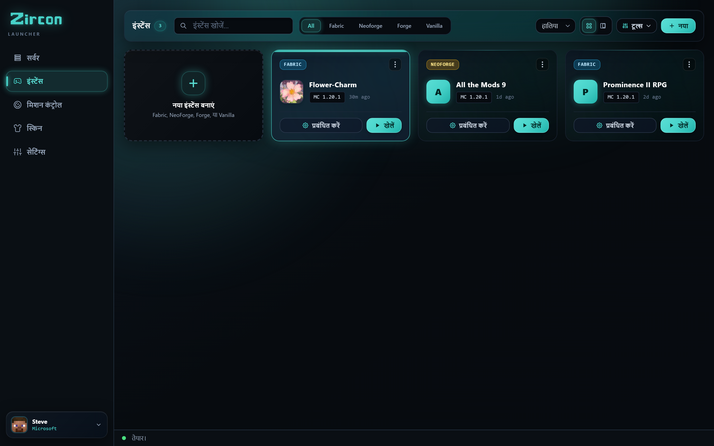
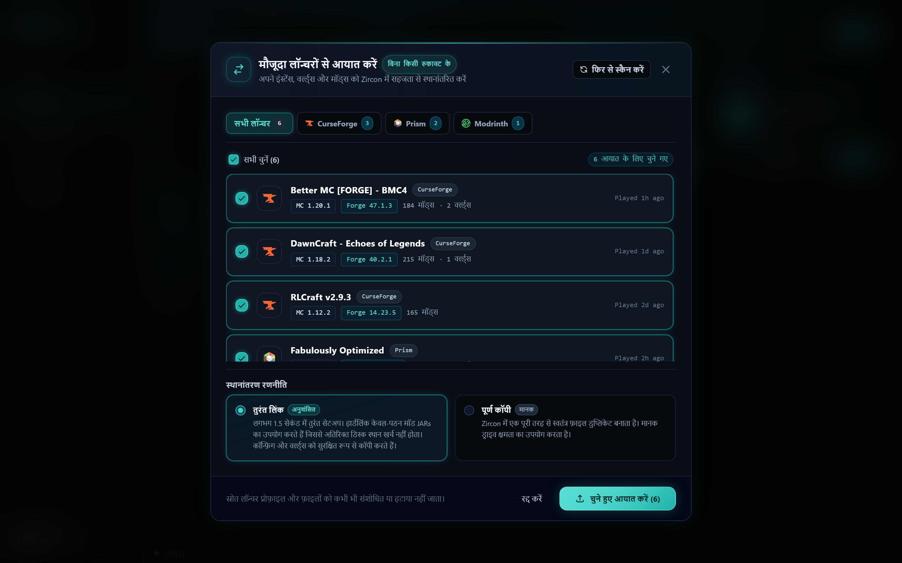
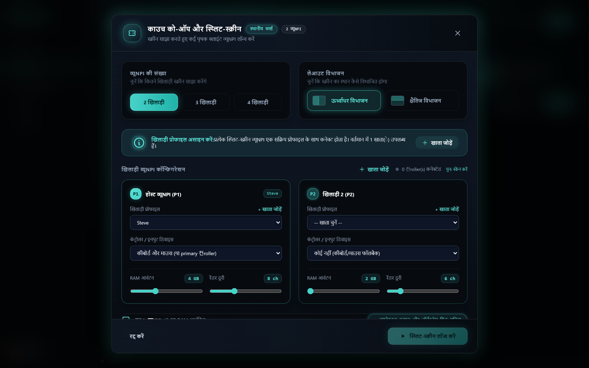
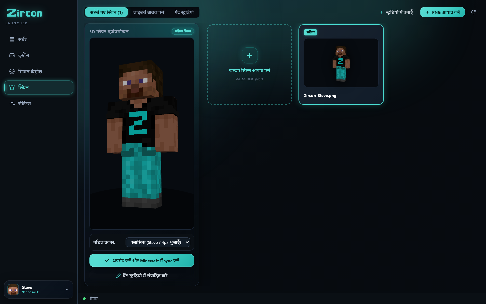

Zircon मॉडपैक असंगतियों को हमेशा के लिए खत्म करता है। एक सर्वर चुनें, PLAY दबाएं, और हर मॉड सेकंडों में इंस्टॉल हो जाता है और क्रिप्टोग्राफिक रूप से सत्यापित होता है। इसके अलावा: CurseForge और Prism से 1-क्लिक इम्पोर्ट, 4-प्लेयर सोफा को-ऑप, और LAN ऑटो-डिस्कवरी।





ऊपर कोई भी टैब क्लिक करें या फुल-स्क्रीन विवरण देखने के लिए छवि पर क्लिक करें।
गेम नाइट से पहले Discord पर घंटों की बहस खत्म करें। बस PLAY दबाएं और स्पॉन हो जाएं।
सर्वर पोर्ट 25565 पर अपना सटीक Bill of Materials (BOM) प्रसारित करता है — मॉड IDs, वर्जन हैश, लोडर, और कॉन्फिग्स।
लॉन्चर मिलीसेकंडों में आपके लोकल इंस्टेंस को स्कैन करता है, उन फाइलों को छोड़ देता है जो आपके पास पहले से हैं और केवल गुम फाइलों को फ्लैग करता है।
गुम फाइलें सीधे Modrinth और CurseForge CDNs से पैरलल में डाउनलोड होती हैं। जीरो करप्ट JARs, जीरो वर्जन असंगतियाँ।

अपनी वर्ल्ड्स, कीबाइंड्स, या मॉडपैक इंस्टेंसेस को त्यागें नहीं। Zircon अपने आप आपके इंस्टॉल किए गए लॉन्चर्स को डिटेक्ट करता है और उन्हें 2 सेकंड से कम समय में नुकसान रहित रूप से पोर्ट करता है।
मॉडपैक्स, ओवरराइड्स, कस्टम कॉन्फिग्स और वर्ल्ड सेव्स को अपने आप डिटेक्ट करता है।
इंस्टेंस ट्रीज़, JVM आर्गुमेंट्स, और वर्ल्ड सेव्स को इम्पोर्ट करता है।
MR पैक्स, इंडेक्स फाइल्स, और कस्टम रिसोर्स पैक्स को सुरक्षित रखता है।
इंस्टेंस, कस्टम बैकअप्स और टेक्सचर पैक फोल्डर्स को ट्रांसफर करता है।
जब आप Zircon लॉन्च करते हैं, तो हमारा नेटिव Rust डिटेक्टर आपके सिस्टम पर इंस्टॉल प्रोफाइल्स को ढूंढता है। चुनें कि आप किन इंस्टेंस को इम्पोर्ट करना चाहते हैं, और Zircon सब कुछ साफ, अलग सैंडबॉक्स में माइग्रेट कर देता है।
वे सभी फीचर्स जो आप हमेशा दूसरे लॉन्चर्स में चाहते थे — आपके डेस्कटॉप ऐप में ही बनाए गए।
कस्टम एक्सेंट कलर्स, डार्क पैलेट्स, और कॉन्फ़िगरेबल व्यू स्टाइल्स के साथ लॉन्चर को अपनी व्यक्तिगत सौंदर्यशास्त्र के अनुसार ढालें।
सक्रिय इंटरनेट कनेक्शन के बिना कहीं भी खेलें। मौजूदा सिंगलप्लेयर वर्ल्ड्स को इम्पोर्ट करें, कस्टम RAM आवंटित करें, और मॉडपैक्स को अलग करें।
सिंक्रोनाइजेशन को बिगाड़े बिना किसी भी सर्वर इंस्टेंस में अपने वैकल्पिक क्लाइंट मॉड्स, शेडर्स, रिसोर्स पैक्स और कीबाइंडिंग्स जोड़ें।
Zircon के पीछे का सेल्फ-होस्टेड मैनेजमेंट इंजन। कोई Docker झंझट नहीं, कोई मल्टी-पोर्ट फायरवॉल दुस्वप्न नहीं। ऐसे मॉडेड सर्वर्स चलाएं जिनसे आपके प्लेयर्स बिना टेक सपोर्ट के वास्तव में कनेक्ट कर सकें।
"सही बिल्ड" के लिए मॉड साइट्स को स्क्रॉल करना और उम्मीद करना कि यह आपके दोस्तों द्वारा चलाए जा रहे वर्जन से मेल खाता होगा।
मॉड फाइल्स को मैनुअली mods/ में ड्रॉप करना और उन फाइल्स को हटाना जो लॉन्च पर क्रैश होती हैं।
सर्वर खाली पड़े रहते हुए, रात 1 बजे अपने दोस्त के साथ कॉन्फिग्स की तुलना करना, एक असंगति के बाद एक।
उन लोगों के लिए बनाया गया जो दोस्तों के साथ मॉडेड Minecraft खेलना चाहते हैं — शाम को मॉड वर्जन और क्रैश लॉग्स को सुलझाने में बर्बाद नहीं करना चाहते।
PLAY दबाएं और Zircon सही Minecraft वर्जन और मॉड लोडर — Fabric, Quilt, Forge, या NeoForge — डाउनलोड करता है, मॉड्स इंस्टॉल करता है, और आपको सीधे गेम में डाल देता है।
हर लॉन्च पर SHA-512 और फिंगरप्रिंट चेक्स के साथ Modrinth और CurseForge से मॉड्स खोजें और डाउनलोड करें। कुछ भी गुम नहीं, कुछ भी पुराना नहीं।
ऑफिशियल Microsoft साइन-इन — आपका पासवर्ड Microsoft तक जाता है, कभी भी Zircon तक नहीं। कोई शेयर्ड लॉगिन नहीं, कोई क्रैक्ड लॉन्चर नहीं, कोई ऑफलाइन वर्काराउंड नहीं।
लाइव 3D प्रीव्यू, ऑफिशियल Mojang क्लाउड सिंक, और API के जरिए ट्रेंडिंग स्किन्स खींचने वाली इन-ऐप कम्युनिटी स्किन एक्सप्लोरर के साथ सेव्ड स्किन सिलेक्टर।
सर्वर्स अपने खुद के शेडर्स और रिसोर्स पैक्स पेश कर सकते हैं। Zircon उन्हें जॉइन करते ही लागू कर देता है — आप बस एक बार 'हां' कहें, और हो गया।
अपने खुद के मॉड्स, शेडर्स और टेक्सचर पैक्स के साथ ऑफलाइन सिंगल-प्लेयर इंस्टेंस बनाएं। सर्वर की जरूरत नहीं — बस शांति से बनाएं।
आपके ब्राउज़र में एक क्लिक। Zircon ऑफिशियल Microsoft फ्लो का उपयोग करता है — आपका पासवर्ड ऐप को कभी नहीं छूता।
आपके सेव्ड सर्वर्स, हाल ही में खेले गए पहले — साथ ही सिफारिशें। हर सर्वर अपने खुद की मॉड लिस्ट के साथ आता है।
Zircon Modrinth और CurseForge से मॉड्स को सिंक और वेरिफाई करता है, अगर सर्वर सो रहा है तो उसे जगाता है, और आपको कनेक्ट करता है। आप स्पॉन हो जाते हैं — पूरी तरह मॉडेड, जाने के लिए तैयार।
कोई धीमा Electron रनटाइम नहीं जो खेलते समय गीगाबाइट्स बैकग्राउंड मेमोरी खा रहा हो। Zircon का कोर डेस्कटॉप इंजन पूरी तरह कंपाइल्ड Rust में लिखा गया है ताकि तत्काल स्टार्टअप, सब-मिलीसेकंड हैश वैलिडेशन और अल्ट्रा-लाइट सिस्टम फुटप्रिंट सुनिश्चित हो।
Zircon के साथ शुरू करने के बारे में आपको जानने की जरूरत है।
जब आप एक सर्वर में जॉइन करते हैं और PLAY दबाते हैं, तो Zircon सर्वर के प्रकाशित Bill of Materials मैनिफेस्ट की तुलना आपके लोकल क्लाइंट फोल्डर से करता है। कोई भी गुम या अपडेटेड मॉड Modrinth और CurseForge SHA-512 हैश और फिंगरप्रिंट्स के जरिए वेरिफाई किए जाते हैं, फिर मैनुअल फाइल ड्रैगिंग के बिना पैरलल में तुरंत डाउनलोड हो जाते हैं।
हां! Zircon में एक नेटिव 1-क्लिक यूनिवर्सल माइग्रेशन टूल शामिल है। यह अपने आप CurseForge, Prism Launcher, Modrinth App, और ATLauncher से इंस्टॉल डायरेक्टरीज़ को डिटेक्ट करता है, जिससे आप दो सेकंड से कम समय में अपने पूर्ण इंस्टेंस ट्रीज़, सेव्स, कीबाइंड्स और मॉड कॉन्फ़िगरेशन इम्पोर्ट कर सकते हैं।
Zircon आपको 4 गेमपैड्स (Xbox, PlayStation, या जनरिक Bluetooth कंट्रोलर्स) कनेक्ट करने और कई अलग-अलग गेम विंडो लॉन्च करने की अनुमति देता है जिन्हें आपके मॉनिटर या TV पर एक सहज स्प्लिट-स्क्रीन ग्रिड में व्यवस्थित किया जाता है। हर प्लेयर अपने खुद के गेमपैड से अपने खुद के कैरेक्टर को नियंत्रित करता है।
हां! Zircon दोनों Modrinth और CurseForge से सीधे मॉड्स खोजने, इंस्टॉल करने और सिंक्रोनाइज़ करने का नेटिव समर्थन करता है, जिसके लिए किसी API की कॉन्फ़िगरेशन की जरूरत नहीं है। दोनों रिपॉज़िटरी बॉक्स से बाहर निकलते ही पूरी तरह एकीकृत हैं।
हां, Zircon Business Source License 1.1 (BSL 1.1) के तहत सोर्स-एवेलेबल है। क्लाइंट लॉन्चर और सेल्फ-होस्टेड सर्वर मैनेजर दोनों प्लेयर्स, होमलैबरर्स और गेमिंग नेटवर्क्स के लिए 100% निःशुल्क हैं। पूरा कोडबेस GitHub पर सार्वजनिक निरीक्षण, सेल्फ-होस्टिंग और कम्युनिटी योगदान के लिए खुला है।
हां। प्रमाणीकरण आपके डिफॉल्ट सिस्टम ब्राउज़र में मानक Microsoft OAuth 2.0 PKCE के माध्यम से किया जाता है। आपके लॉगिन क्रेडेंशियल्स सीधे Microsoft के लॉगिन सर्वर्स पर जाते हैं और कभी भी Zircon द्वारा एक्सेस, हैंडल या स्टोर नहीं किए जाते।
Zircon नेटिवली Fabric, Quilt, Forge, और NeoForge का समर्थन करता है। जब आप एक इंस्टेंस लॉन्च करते हैं या सर्वर में जॉइन करते हैं, तो लॉन्चर अपने आप आवश्यक मॉड लोडर वर्जन और वेरिफाइड Adoptium Temurin Java रनटाइम इंस्टॉल कर देता है।
निःशुल्क ओपन-सोर्स लॉन्चर डाउनलोड करें, या सेल्फ-होस्टेड सर्वर मैनेजर पाएं।